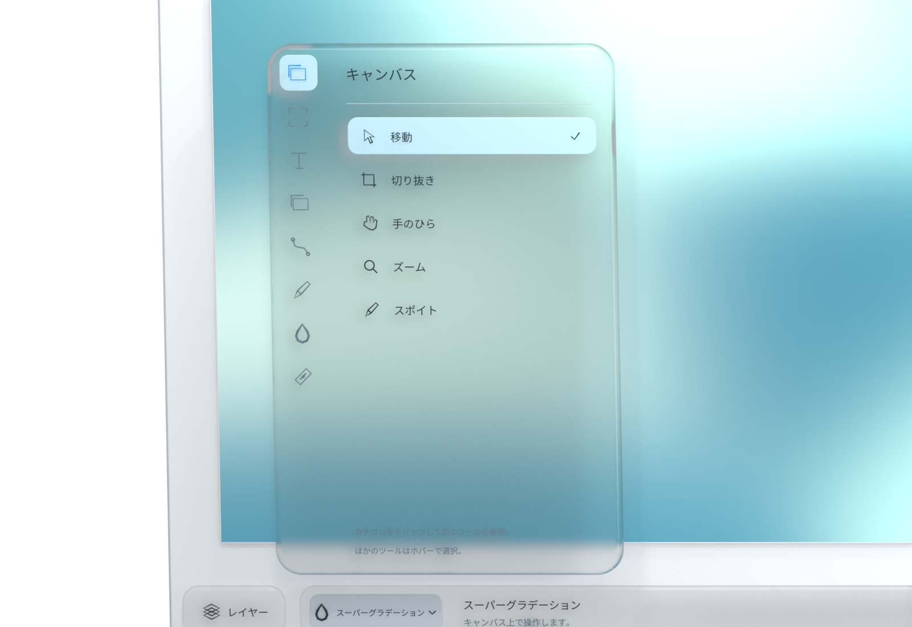
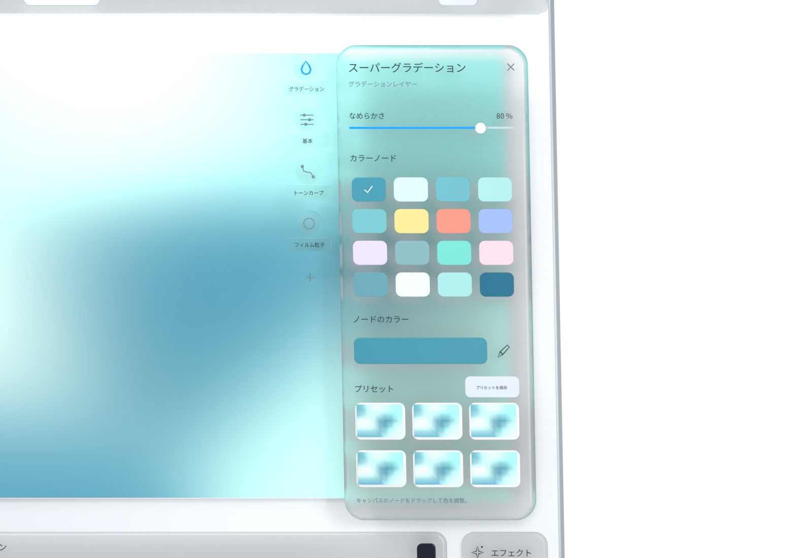
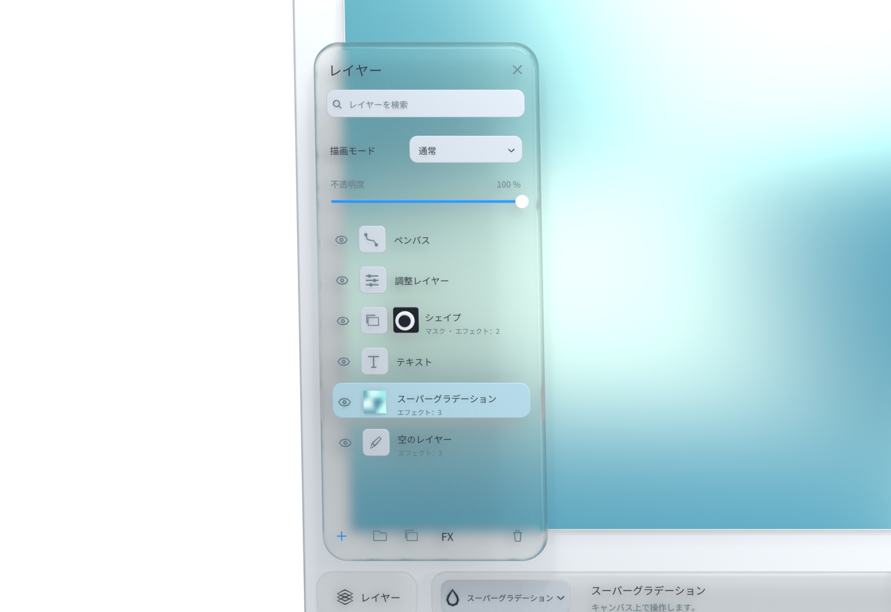
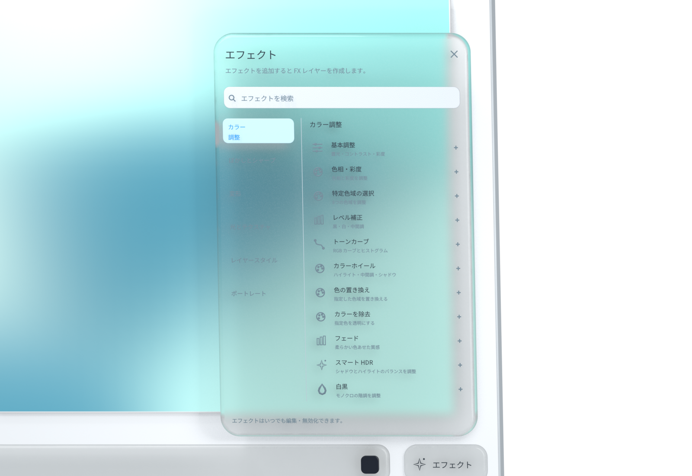
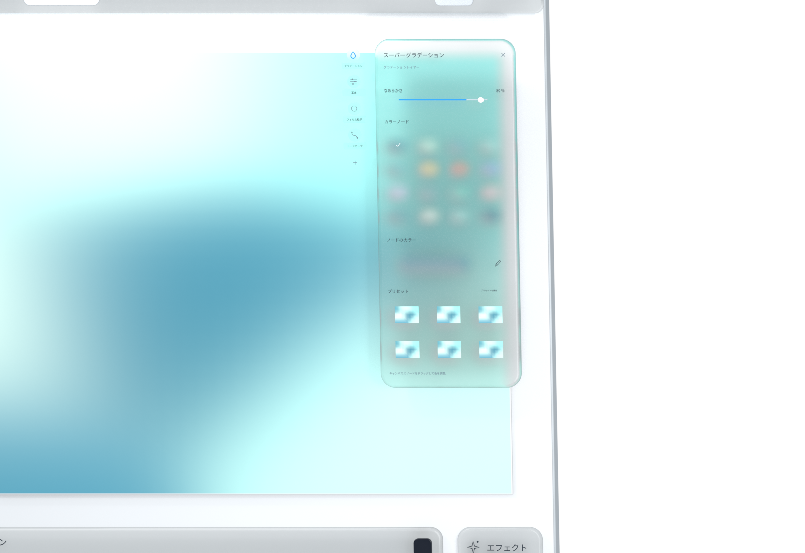

すぐ手に届くツール
直感のままに、描き始めよう。
移動や切り抜き、ブラシやパスなど、目的ごとにまとまったツール。メニューを開いて、今使いたい道具を選びましょう。


ふと浮かんだ想いを、自分らしい表現に。
スクロールして見る ↓iMage Pro
最初からすべての手順を決めなくても大丈夫。まず一筆、そこから直感のままに。小さな始まりが、豊かな作品につながります。
アイデアをたどって、スクロール。
すぐ手に届くツール
移動や切り抜き、ブラシやパスなど、目的ごとにまとまったツール。メニューを開いて、今使いたい道具を選びましょう。

流れる色彩
スーパーグラデーションのノードを動かして、色の流れを探れます。気に入った組み合わせをプリセットに保存して、次の創作に使えます。

試せるレイヤー
レイヤーで画面を整理し、マスクで変化を試す。別の表現を探してから、好きな状態に戻すこともできます。

重ねられるエフェクト
色調整から光や質感まで、分類から探せます。エフェクトを重ね、試しながら、自分らしい仕上がりを見つけましょう。

表現を変える順序
エフェクトは並び順に適用されます。ドラッグで順序を入れ替え、同じエフェクトでも異なる仕上がりを探せます。

Macの中で
画像とプロジェクトはローカルで処理されます。アカウント登録、広告トラッキング、利用状況の分析はなく、創作データを自動送信しません。
プライバシーについて ↗誰もが創作できるように
無料で使えるアプリです。ソースコードはApache-2.0で公開されます。第三者のコンポーネントとブランド素材には、それぞれの条件が適用されます。
GitHub ↗中文 · ENGLISH · 日本語 · 한국어
簡体字中国語、英語、韓国語、日本語に対応。アプリの設定から表示言語を切り替えられます。
月間インスピレーション展
毎月のテーマに沿った作品を紹介。トップページへの掲載、作者名とポートフォリオへのリンクで、創作を応援します。賞金はありません。
展示について ↗作品掲載 · 作者名 · デジタル入選カード
次のひらめきに、場所を。
無料。アカウント登録は不要です。
Macプレビュー版をダウンロードApple Silicon · macOS 14以降。プレビュー版はAppleの公証を受けていません。インストール方法はリリースページをご覧ください。 GitHub Releases ↗